Role
Director of Design
Zillow's sign-in experience needed a major upgrade to become a Housing Super App. At the time, it quietly hurt customers.
Minimal friction captured a high volume of leads. The same shortcuts made the Housing Super App impossible - blocking customization, slowing product development, and threatening Zillow's high security standards. While the team roadmapped small improvements, I ran an independent audit and crafted a holistic experience strategy to ensure we targeted the highest impact improvements.
I audited every place sign-in was required, how customers were asked, and what we asked for. The picture: a system that grew one feature at a time.
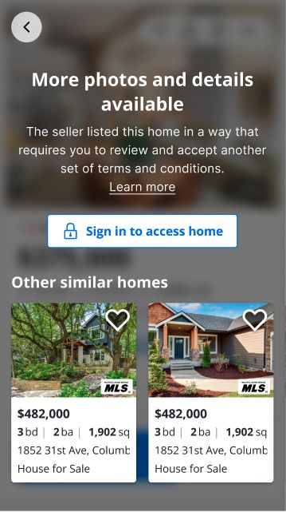
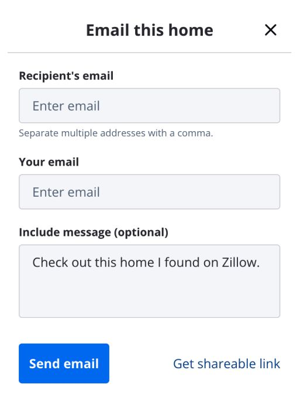
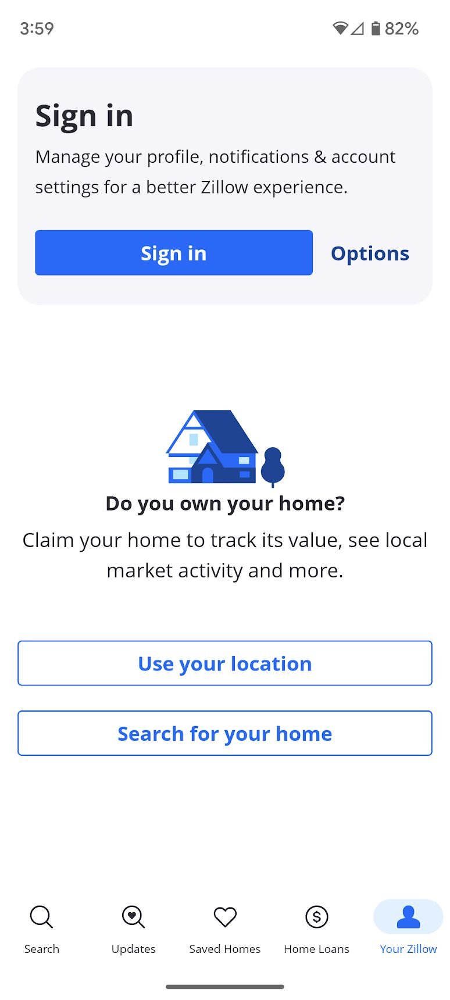
I studied browsing-first apps (Airbnb, Expedia) and transaction-first apps (Robinhood, Ally, CarMax). They behaved differently for a reason, and Zillow was both.
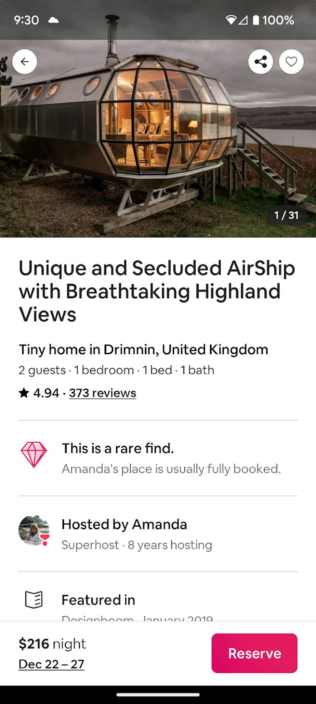
Let people in before forcing a decision.
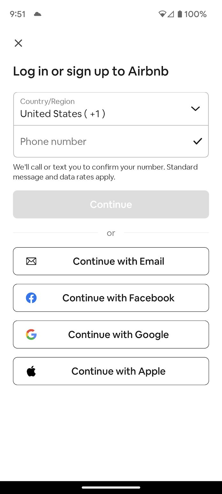
Same ask, same interface, every time.
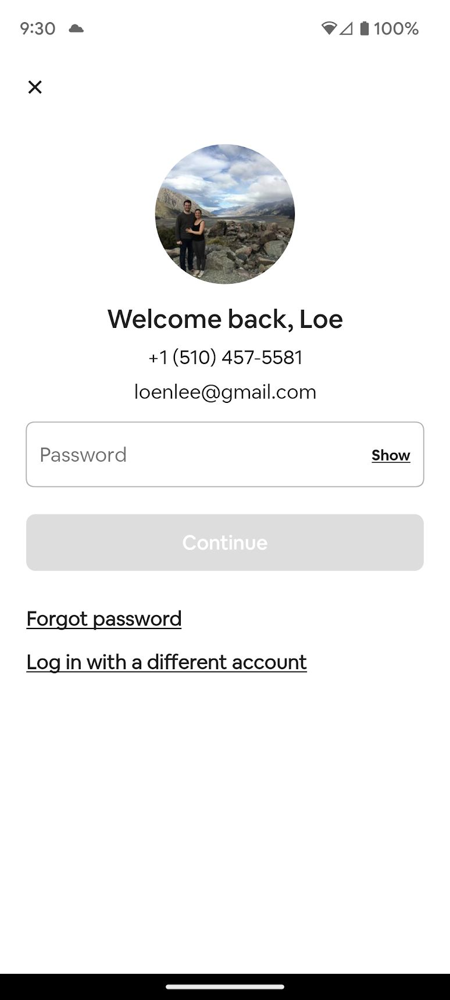
Use what you already know.
One identity across the app.
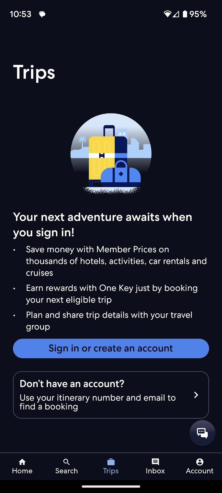
Match the moment and the risk.
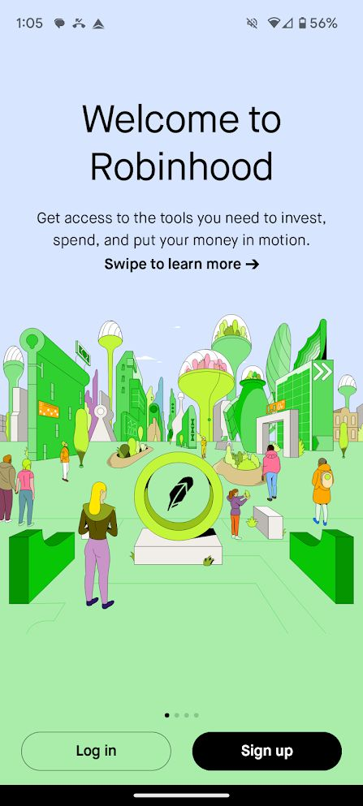
More context as the stakes rise.
There was no single right answer until the business decided what it was optimizing for. So the recommendation was a sequence that de-risked the decision, not a finished screen.
In the meantime, execs suddenly uncovered an urgent (and confidential) business need.
With no PM DRI, thin design resources, and sixteen engineering teams in play, the job was to manufacture alignment, and to keep craft high while doing it.
I wrote a one page product document, met with my junior designer daily to ensure high craft, ran cross functional design workshops to align on a concept, and teed up customer research to lead through design and create clarity for the business.
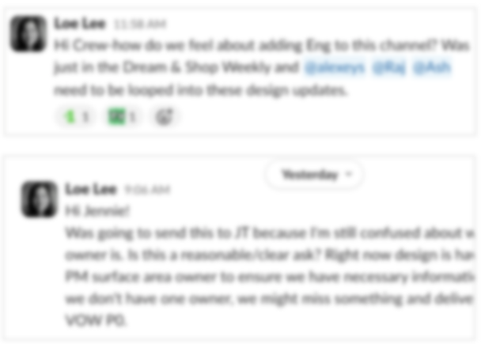
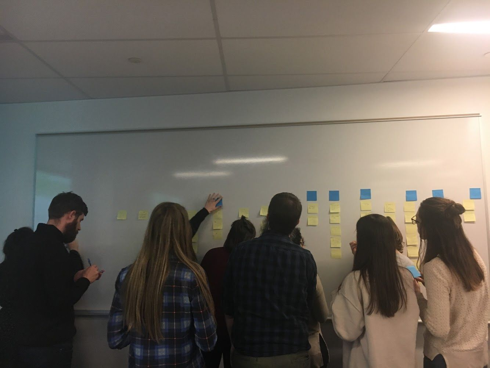
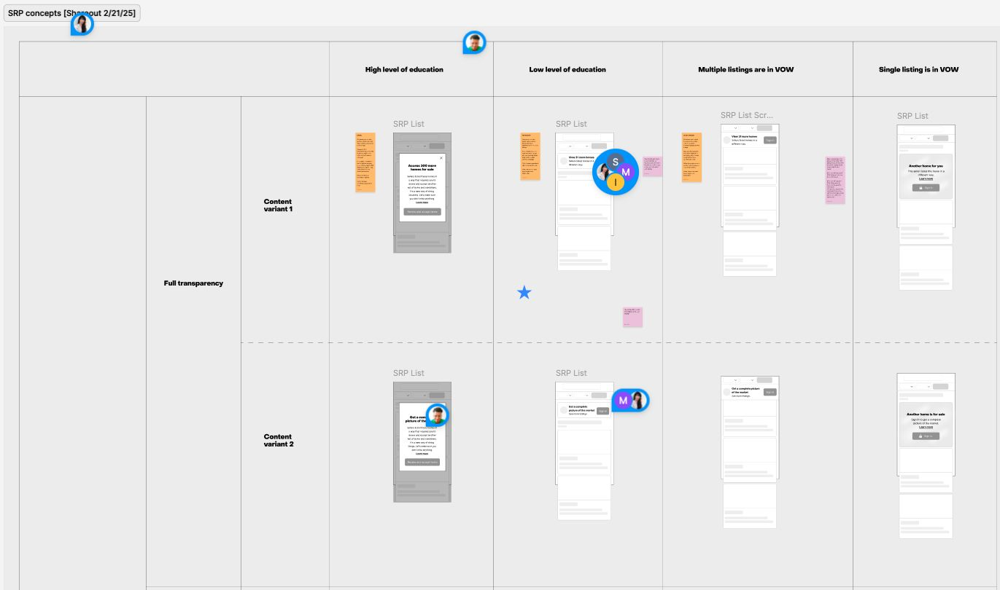
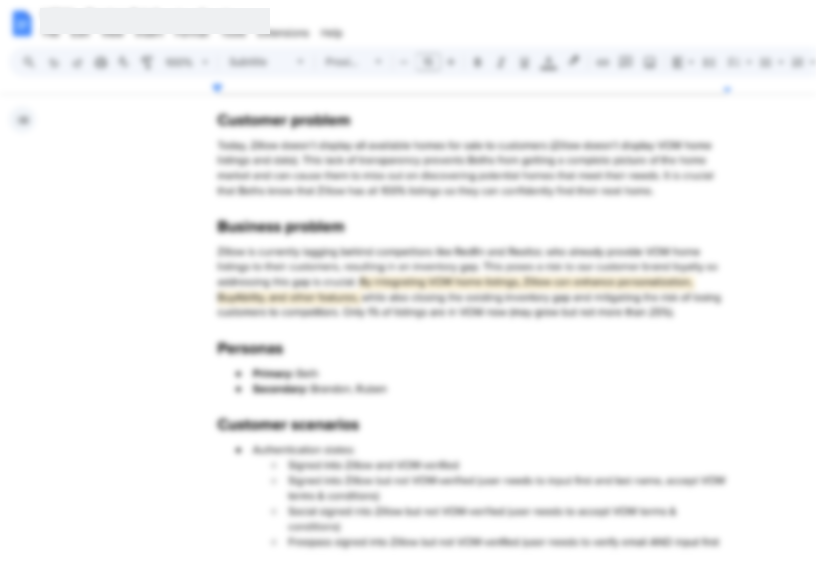
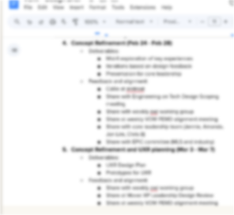
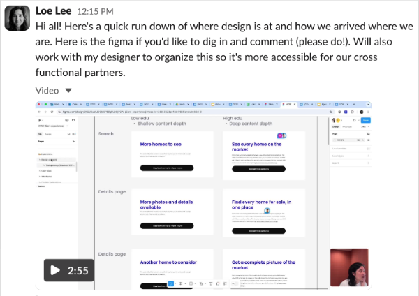
Great work is never done. The story (probably) lives on to this day.